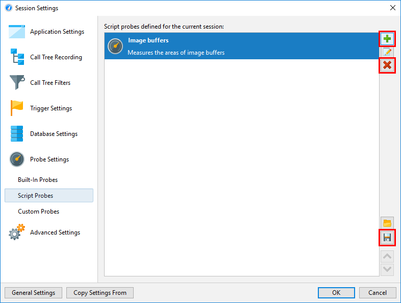
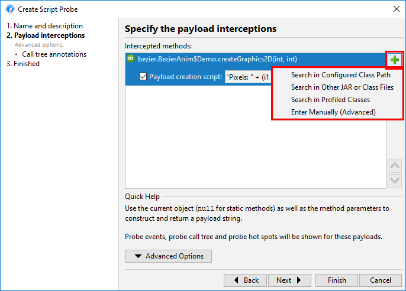
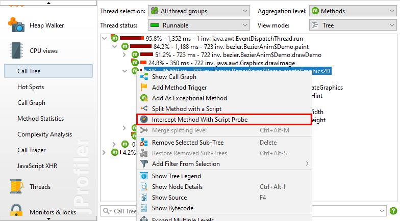
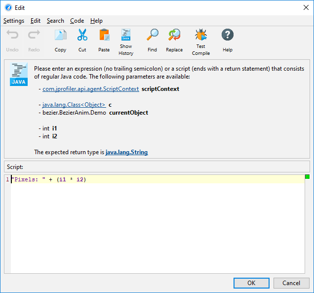

Developing a custom probe in your IDE requires a clear understanding of the interception point and the benefits that the probe will provide. With script probes, on the other hand, you can quickly define simple probes directly in the JProfiler GUI and experiment without having to learn any API. Unlike embedded or injected custom probes, script probes can be redefined during a running profiling session, leading to a fast edit-compile-test loop.
A script probe is defined by selecting an intercepted method and entering a script that returns the payload string for the probe. Multiple such method-script pairs can be bundled in a single probe.
The script probe configuration is accessed in the session settings. This is the place to create and delete script probes as well as for saving your script probes to a set that can be imported by other profiling sessions.

Each script probe needs a name and optionally a description. The name is used to add a probe view to JProfiler's view selector in the "JEE & Probes" section. The description is shown in the header of the probe view and should be a short explanation of its purpose.
For selecting a method you have multiple options, including selecting a class from the configured classpath or selecting a class from the profiled classes if the profiling session is already running. In the second step, you can then select a method from the selected class.

A much easier way to select the intercepted method is from the call tree view. In the context menu, the Intercept Method With Script Probe action will ask you if you want to create a new probe or add an interception to an existing probe.

In the script editor, you have access to all parameters of the intercepted method as well as the object on which the method was called. If you need access to the return value of the intercepted method or any thrown exceptions, you have to write an embedded or injected probe.
In this environment, your script can construct the payload string, either as an expression or as
a sequence of statements with a return statement.
The simplest version of such a script simply returns parameter.toString() for one parameter
or String.valueOf(parameter) for a parameter with a primitive type.
If it returns null, no payload will be created.
If you record CPU and probe data at the same time, the call tree view in the CPU section will show links into the probe view at the appropriate call stacks. Alternatively, you can select to show the payload strings inline in the CPU call tree view. The "Payload interceptions->Call tree annotations" step of the probe wizard contains this option.

One more parameter that is available to the script is the script context, an object of type
com.jprofiler.api.agent.ScriptContext that allows you to store data between
invocations of any script that is defined for the current probe. For example, let's suppose
that the intercepted method A only sees objects that have no good text representation, but
the association between object and display name could be obtained by intercepting method B.
Then you could intercept method B in the same probe and save the object-to-text association directly to the
script context. In method A you would then get that display text from the script context and use it to build
the payload string.
If these kinds of concerns get too complex, you should consider switching to the embedded or injected probe APIs.
Script probes are designed to facilitate an easy entry to custom probe development, but they are missing a couple of capabilities from the full probe system that you should be aware of: